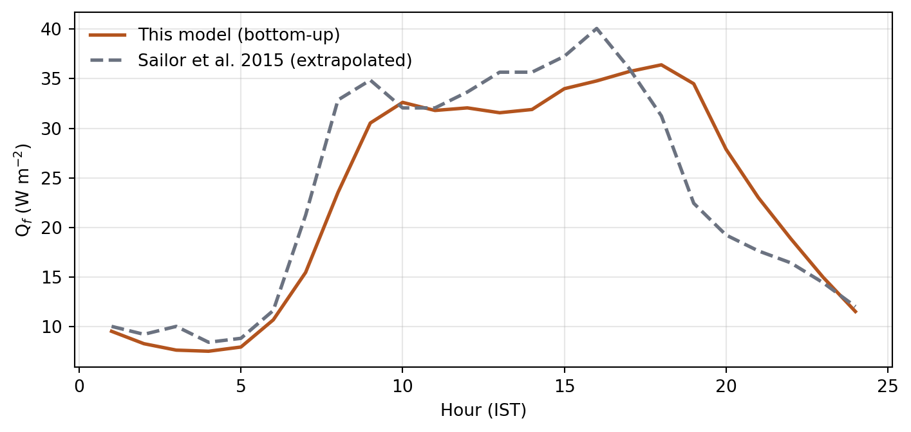
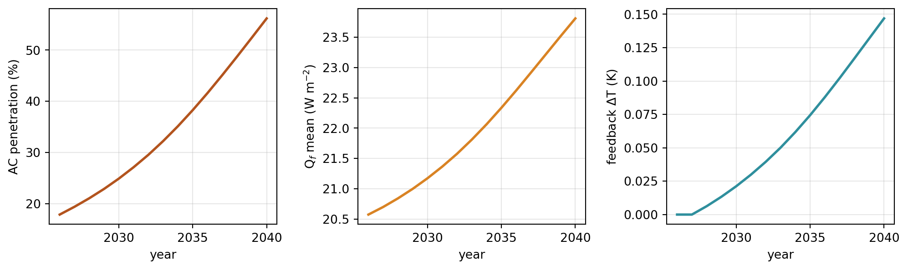
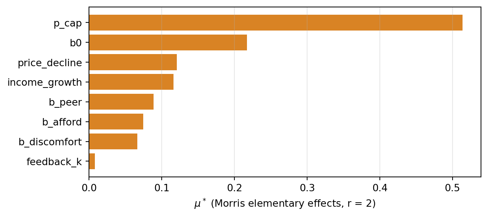

Results
1. Anthropogenic heat, 2026 baseline
City-scale magnitude agrees. The diurnal shape does not, and that is the point: the benchmark’s profile is derived from US utility load curves and peaks mid-afternoon, while this model — built from Indian appliance schedules and evening-weighted residential demand — peaks at 18:00.
Composition of the 2026 total over built cells: buildings dominate, road traffic contributes a large and poorly constrained share, human metabolism about 4 W/m².
2. Adoption trajectory 2026–2040

| penetration % | Qf mean W/m² | Qf peak W/m² | ΔT °C | peak electricity MW | |
|---|---|---|---|---|---|
| year | |||||
| 2026 | 17.9 | 20.58 | 32.30 | 0.00 | 3064 |
| 2030 | 24.9 | 21.18 | 33.37 | 0.02 | 3148 |
| 2035 | 38.3 | 22.34 | 35.42 | 0.07 | 3309 |
| 2040 | 56.2 | 23.81 | 38.06 | 0.15 | 3516 |
Penetration roughly triples. The waste heat added is entirely residential cooling: no population growth, no new buildings, no change in commercial or industrial demand.
3. Thermal inequality
| indoor mean °C | indoor max °C | discomfort Kh | setpoint °C | runtime | |
|---|---|---|---|---|---|
| archetype | |||||
| res_slum | 32.2 | 38.4 | 22634 | 27.0 | 0.50 |
| res_lowrise | 31.4 | 36.6 | 18290 | 25.5 | 0.74 |
| res_midrise | 30.6 | 34.7 | 14030 | 25.2 | 0.77 |
| res_tower | 30.6 | 34.4 | 13736 | 25.2 | 0.78 |
Informal dwellings run 1.6 °C hotter on average and 4.0 °C hotter at peak than tower flats, carry 65% more discomfort degree-hours, and operate cooling at 64% of the rate. Two mechanisms produce that: an uninsulated low roof over a small dwelling (45 W/m² roof gain, 3 air changes per hour) and a household that cannot afford to run a machine it may not own.
The outdoor heat those households are exposed to is produced largely by other people’s air conditioners. That asymmetry — private benefit, shared cost — is the result the model exists to quantify.
4. What actually drives the answer

| output | delta_t_2040 | penetration_2040 | qf_2040_wm2 |
|---|---|---|---|
| parameter | |||
| b0 | 0.095 | 0.217 | 1.657 |
| b_afford | 0.079 | 0.074 | 0.794 |
| b_discomfort | 0.044 | 0.067 | 0.501 |
| b_peer | 0.050 | 0.089 | 0.678 |
| feedback_k | 0.282 | 0.008 | 0.320 |
| income_growth | 0.088 | 0.116 | 0.877 |
| p_cap | 0.311 | 0.514 | 4.263 |
| price_decline | 0.076 | 0.121 | 0.931 |
Two readings, both worth stating:
The answer is set by the two parameters with no empirical anchor. p_cap (the annual purchase hazard ceiling) and b0 (baseline propensity) dominate every output. They are calibration knobs, not measured quantities. That is what makes this a prototype, and it says exactly where to spend effort next.
Discomfort ranks second-last for adoption yet produces the largest spread across the stock. Income and price decide who adopts; fabric decides who suffers while not adopting. feedback_k is last for adoption and second for ΔT — the feedback is visible in the physics and invisible in the behaviour.
5. On ensembles
Stochastic replicates are not this model’s uncertainty. Across seeds, 2040 penetration varies by under 0.1 percentage points: with 3.2 million households, binomial noise averages out completely. The uncertainty lives in the coefficients, which is why screening and calibration matter here and ensembles do not.